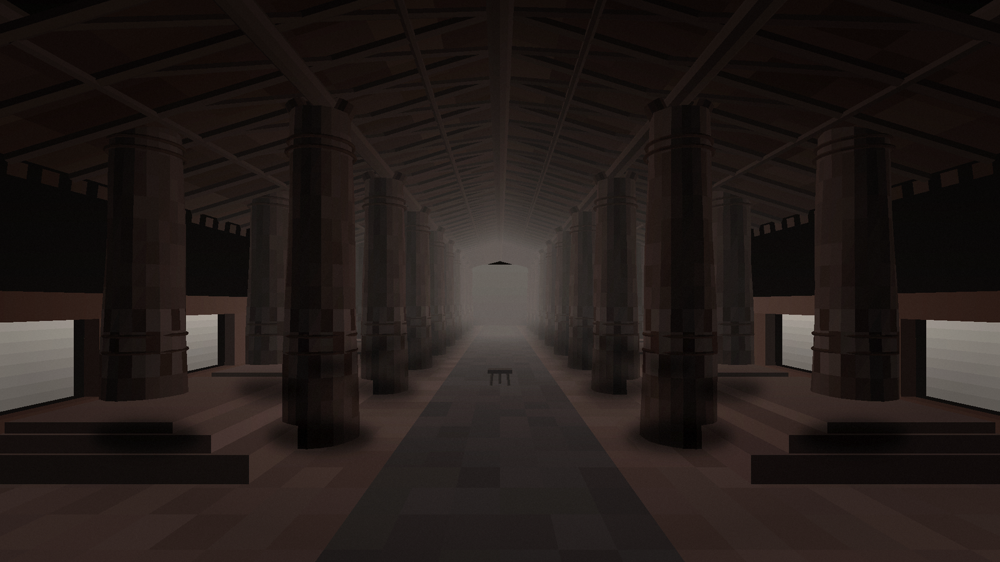
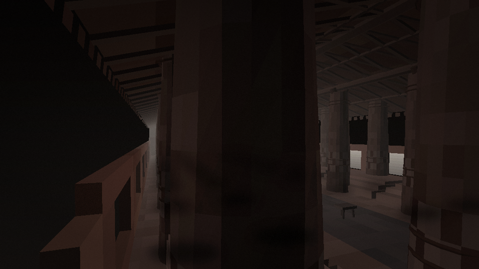
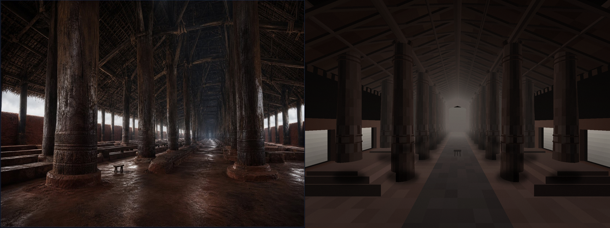

Derived from the exact approved Chapter 8 environment board and Art Bible direction. No generic demo asset, invented character, V013, H3, CQ-9, rejected/superseded artwork, or limited internal study is used as production authority.
Open full review sheet · Download assembled GLB · Download OBJ · Production manifest

Hero render from actual 3D geometry

Interactive turntable scrubber

Frame 0 / 7 · Download animated GIF

Source / result comparison

Production state
Geometry
45,670 vertices · 72,246 triangles · 9 named nodes
Modules: HALL_BENCH_MODULE, HALL_POST_MODULE, HALL_ROOF_BAY_MODULE, HALL_STOOL_MODULE, HALL_WALL_OPENING_MODULE
Units are neutral proxies (1 ≈ 1 m for camera/layout only), not approved story dimensions.
Exact next release gate
CD selects film use/canon and approves one shared Chapter 8 spatial, metric and camera interpretation. Then M2 converts this proxy to final H3 topology/UVs and M3 delivers H4 earth/hardwood/thatch PBR plus H9 moving-camera lighting proof.